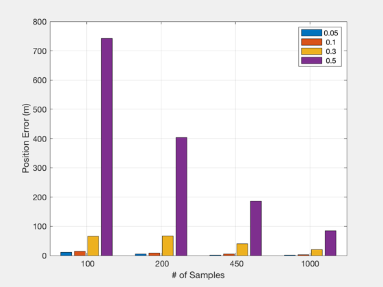

Analyze the performance of the LPEccentric algorithm.
Generate plots of run-time, delta-v, and final state error as a function of the eccentricity and the number of samples.
Since version 7. ------------------------------------------------------------------------ Usage: LPPerformanceDemo ------------------------------------------------------------------------ See also Mag, TestLPEccentric, FFEccGoals, FFEccProp, NuDot, OrbRate, M2Nu ------------------------------------------------------------------------
Contents
------------------------------------------------------------------------- Copyright (c) 2004 Princeton Satellite Systems, Inc. All rights reserved. -------------------------------------------------------------------------
reference orbit
a = 15000; inc = 20*pi/180; W = pi/4; w = pi/3; e = 0.9; M = pi/6; n = OrbRate(a); el0 = [a, inc, W, w, e, M];
initial and final true anomaly
th0 = M2Nu(e,M); thF = th0 + 2*pi;
initial geometry
y0 = 0; xMax = 1; nu_xMax = 0; zMax = 0; nu_zMax = 0;
final geometry
y0_f = 1+randn*0; xMax_f = 2+randn*0; nu_xMax_f = 0; zMax_f = 0; nu_zMax_f = 0;
vary number of samples and eccentricity
nS = round(logspace(2,log10(1000),4)/50)*50; e = [.05 .1 .3 .5]; nSN = length(nS); eN = length(e); eT = zeros(nSN,eN); dVTot = zeros(nSN,eN); posErr = zeros(nSN,eN); k = 0; for j = 1:eN fprintf('Eccentricity: %f\t(%d of %d)\n-------------------------\n',e(j),j,eN); el0(5) = e(j); % initial and final true anomaly th0 = M2Nu(e(j),M); thF = th0 + 2*pi; % initial state D = FFEccGoals( e(j), y0, xMax, nu_xMax, zMax, nu_zMax ); xH0 = FFEccProp( D, th0, e(j) ); thDot = NuDot(n,e(j),th0); xH0(4:6) = xH0(4:6)*thDot; % final state D = FFEccGoals( e(j), y0_f, xMax_f, nu_xMax_f, zMax_f, nu_zMax_f ); xHF = FFEccProp( D, thF, e(j) ); thDot = NuDot(n,e(j),thF); xHF(4:6) = xHF(4:6)*thDot; for i = 1:nSN fprintf('\t# Samples: %d\t\t(%d of %d)\n',nS(i),i,nSN); [xH_int,xH_lin,dVTot(i,j),eT(i,j),err] = TestLPEccentric( el0, xH0, th0, xHF, thF, nS(i), 0 ); posErr(i,j) = Mag(err(1:3))*1e3; end end NewFig('Position Errors') bar(posErr) set(gca,'xticklabel',cellstr(num2str(nS'))) xlabel('# of Samples') ylabel('Position Error (m)') legend(cellstr(num2str(e'))) grid on %--------------------------------------
Eccentricity: 0.050000 (1 of 4) ------------------------- # Samples: 100 (1 of 4) nS = 100 DELTA-V = 0.197794 m/s run time = 0.011864 seconds POS ERROR = 0.000000 mm VEL ERROR = 0.000000 mm/s integrating... POS ERROR = 11.353299 m VEL ERROR = 9.209573 mm/s # Samples: 200 (2 of 4) nS = 200 DELTA-V = 0.195903 m/s run time = 0.035088 seconds POS ERROR = 0.000000 mm VEL ERROR = 0.000000 mm/s integrating... POS ERROR = 4.725795 m VEL ERROR = 4.528432 mm/s # Samples: 450 (3 of 4) nS = 450 DELTA-V = 0.194931 m/s run time = 0.055757 seconds POS ERROR = 0.000000 mm VEL ERROR = 0.000000 mm/s integrating... POS ERROR = 1.639839 m VEL ERROR = 1.996140 mm/s # Samples: 1000 (4 of 4) nS = 1000 DELTA-V = 0.194521 m/s run time = 0.114084 seconds POS ERROR = 0.000000 mm VEL ERROR = 0.000000 mm/s integrating... POS ERROR = 1.168448 m VEL ERROR = 0.898334 mm/s Eccentricity: 0.100000 (2 of 4) ------------------------- # Samples: 100 (1 of 4) nS = 100 DELTA-V = 0.208472 m/s run time = 0.012172 seconds POS ERROR = 0.000000 mm VEL ERROR = 0.000000 mm/s integrating... POS ERROR = 14.949702 m VEL ERROR = 9.879154 mm/s # Samples: 200 (2 of 4) nS = 200 DELTA-V = 0.205062 m/s run time = 0.022516 seconds POS ERROR = 0.000000 mm VEL ERROR = 0.000000 mm/s integrating... POS ERROR = 9.149267 m VEL ERROR = 4.738537 mm/s # Samples: 450 (3 of 4) nS = 450 DELTA-V = 0.203333 m/s run time = 0.046320 seconds POS ERROR = 0.000000 mm VEL ERROR = 0.000000 mm/s integrating... POS ERROR = 5.316387 m VEL ERROR = 2.031861 mm/s # Samples: 1000 (4 of 4) nS = 1000 DELTA-V = 0.202603 m/s run time = 0.105778 seconds POS ERROR = 0.000001 mm VEL ERROR = 0.000000 mm/s integrating... POS ERROR = 3.494950 m VEL ERROR = 0.875572 mm/s Eccentricity: 0.300000 (3 of 4) ------------------------- # Samples: 100 (1 of 4) nS = 100 DELTA-V = 0.287479 m/s run time = 0.010912 seconds POS ERROR = 0.000000 mm VEL ERROR = 0.000000 mm/s integrating... POS ERROR = 65.832691 m VEL ERROR = 25.695882 mm/s # Samples: 200 (2 of 4) nS = 200 DELTA-V = 0.271818 m/s run time = 0.020165 seconds POS ERROR = 0.000000 mm VEL ERROR = 0.000000 mm/s integrating... POS ERROR = 67.417317 m VEL ERROR = 10.567382 mm/s # Samples: 450 (3 of 4) nS = 450 DELTA-V = 0.263266 m/s run time = 0.047298 seconds POS ERROR = 0.000000 mm VEL ERROR = 0.000000 mm/s integrating... POS ERROR = 40.040962 m VEL ERROR = 4.875973 mm/s # Samples: 1000 (4 of 4) nS = 1000 DELTA-V = 0.259537 m/s run time = 0.104123 seconds POS ERROR = 0.000000 mm VEL ERROR = 0.000000 mm/s integrating... POS ERROR = 20.472160 m VEL ERROR = 2.369172 mm/s Eccentricity: 0.500000 (4 of 4) ------------------------- # Samples: 100 (1 of 4) nS = 100 DELTA-V = 0.372489 m/s run time = 0.012298 seconds POS ERROR = 0.000000 mm VEL ERROR = 0.000000 mm/s integrating... POS ERROR = 742.739806 m VEL ERROR = 117.146065 mm/s # Samples: 200 (2 of 4) nS = 200 DELTA-V = 0.335520 m/s run time = 0.021885 seconds POS ERROR = 0.000000 mm VEL ERROR = 0.000000 mm/s integrating... POS ERROR = 403.314370 m VEL ERROR = 68.359832 mm/s # Samples: 450 (3 of 4) nS = 450 DELTA-V = 0.315634 m/s run time = 0.061555 seconds POS ERROR = 0.000000 mm VEL ERROR = 0.000000 mm/s integrating... POS ERROR = 186.599939 m VEL ERROR = 33.098810 mm/s # Samples: 1000 (4 of 4) nS = 1000 DELTA-V = 0.307062 m/s run time = 0.101743 seconds POS ERROR = 0.000002 mm VEL ERROR = 0.000000 mm/s integrating... POS ERROR = 84.103025 m VEL ERROR = 15.287621 mm/s